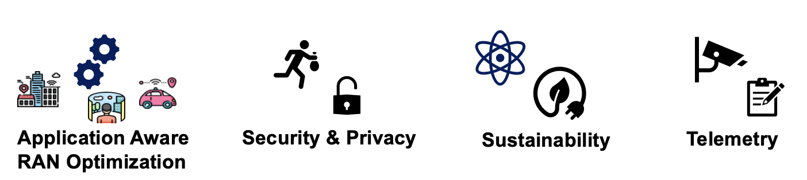
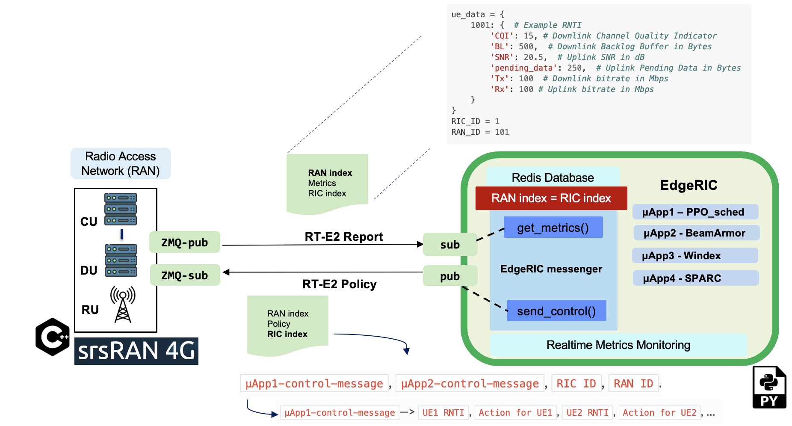

EdgeRIC: Delivering Real-time Intelligence to Radio Access Networks

EdgeRIC is a platform for real-time AI-in-the-loop for decision and control in cellular networks. It is designed to access network and application-level information to execute AI-optimized and other policies in real-time (sub-millisecond) .
EdgeRIC Focus Areas
{kind=link}
Demo Videos
Anti Jamming with BeamArmor
Controlling the MIMO weights in realtime to steer the beam null in the direction of jammer
System Performance Optimization with AI based scheduling
Controlling the scheduling decision with Reinforcement Learning based policy that was trained to maximize the overall system throughput observed
Current Status
{kind=link}
- This release is based on srsRAN 4G, we will shortly release our 5G version. We suport:
- Realtime KPI monitoring:
UL/ DL channel conditions
UL/ DL pending buffers for transmission
Per UE throughput
Baseband I/Q sample monitoring
- Realtime Control actions:
MAC scheduling on the downlink, both AI training and inference capability
Control for MIMO weights
Current Publications
Empowering Real-time Intelligent Optimization and Control in NextG Cellular Networks Paper: EdgeRIC
Code: Github Respository
Website: https://wcsng.ucsd.edu/edgeric/
Seamless Anti-Jamming in 5G Cellular Networks with MIMO Null-steering
Paper BamArmor
Code: Github Respository
A Lightweight and Verifiable Digital Twin for NextG Cellular Networks
Paper: Tiny-twin
Realtime Neural Whittle Indexing for Scalable Service Guarantees in NextG Cellular Networks
Paper: Windex
Code: Github Repository
Code: Github Respository
Funding
This work was funded primarily by NSF Grants CNS 2312978, CNS 2312979 and in part by CNS 1955696, ECCS 2030245, ARO grant W911NF- 19-1-0367.
Contact us
Getting Started
EdgeRIC Architecture
EdgeRIC tutorials
Dataset